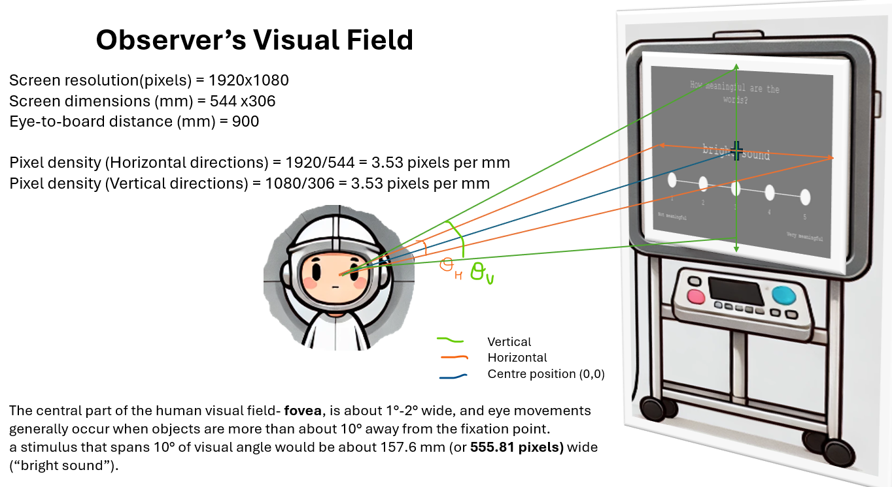
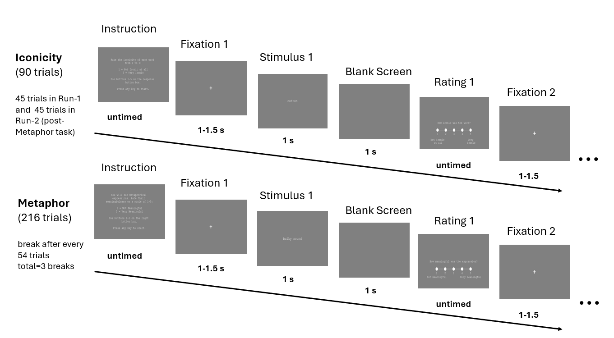
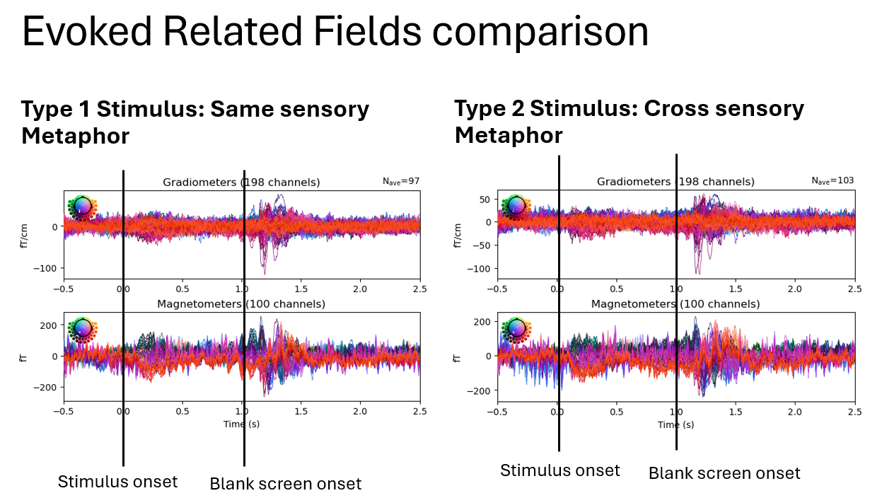
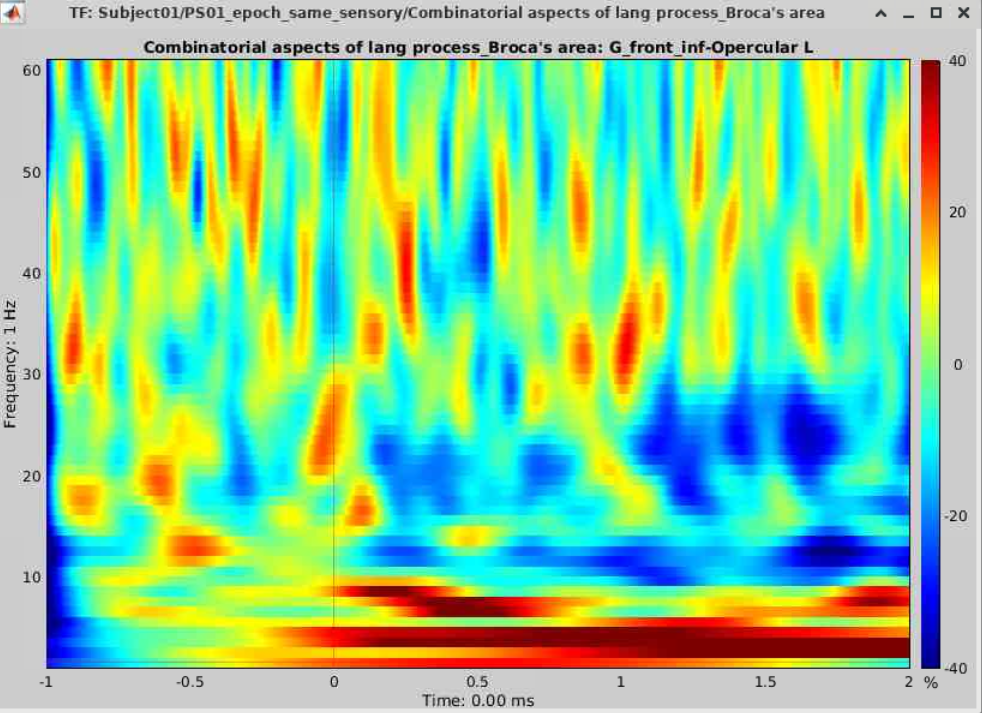
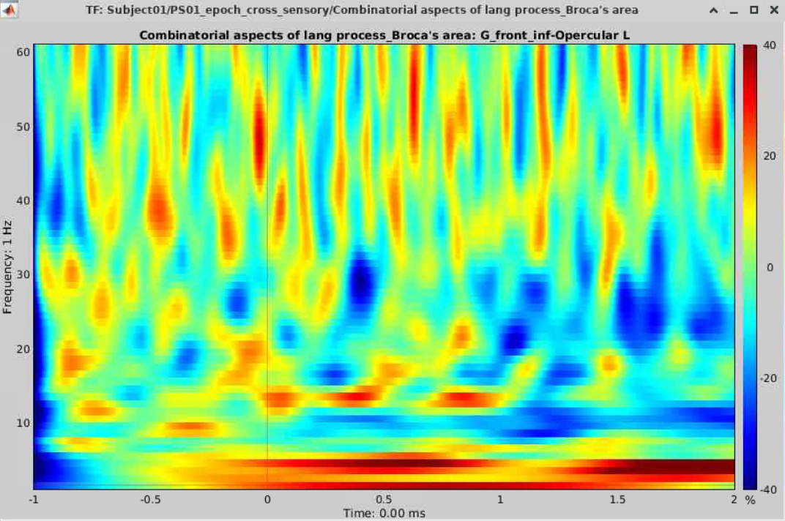

Investigating Neural Mechanisms Underlying Metaphor and Iconicity Comprehension



Software Used
MNE-Python for MEG data analysis and preprocessing.
Paradigm developed using PsychoPy coder.
Preprocessing Pipeline Steps
Maxwell.find_bad_channels_maxwell() & remove them using .drop_channels()
tsss(st_correlation=0.95, tsss_duration=15)
Bandpass Filter [0.3, 100] & Notch Filter [50, 100]
Find EOG events (thresh=500e-6) & annotate muscle z-score (thresh=10) & manual annotation of noisy segments on raw.plot()
ICA ("fastica", n=20)
Stimulus – word appearing slide – STI002, event_id=5 (consider odd event indices)
Epoching (tmin=-1, tmax=2.5), baseline (-1, 0), linear detrending (detrend=1)
Study Details
This neurolinguistic study investigates neural responses to two types of metaphor stimuli:
- Same-sensory metaphors: e.g., “tender touch” (haptic stimuli), “crunching” (auditory)
- Cross-sensory metaphors: e.g., “blonde” (visual + auditory), “smooth picture” (haptic + visual)
The aim is to investigate how the brain processes linguistic metaphors involving different sensory modalities.
Time-Frequency Analysis

Time-Frequency Analysis of Broca's Area (G Front-Inf-Opercular L) in Right-Handed Subject - Same Sensory Metaphors

Time-Frequency Analysis of Broca's Area (G Front-Inf-Opercular L) in Right-Handed Subject - Cross Sensory Metaphors